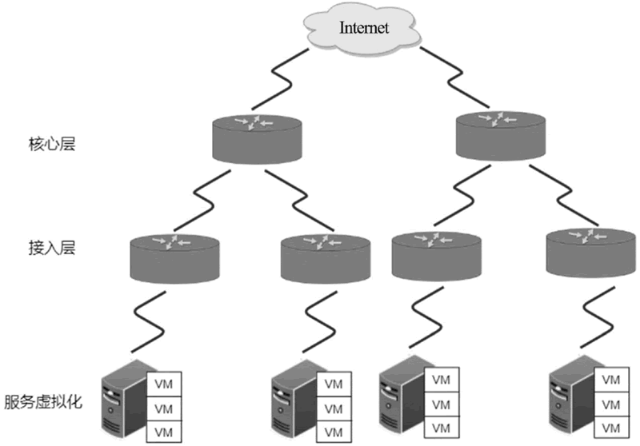
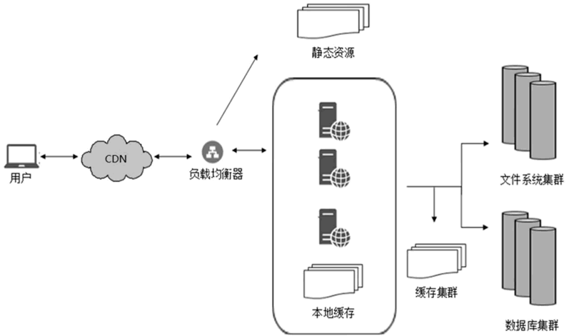
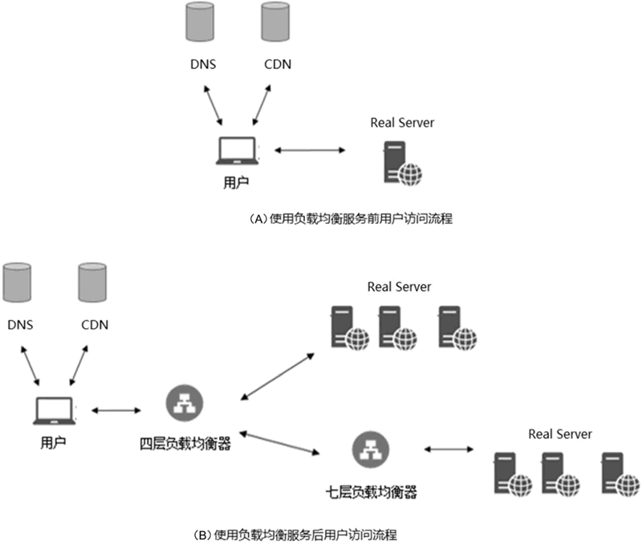
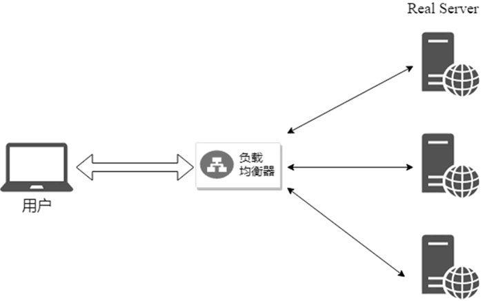
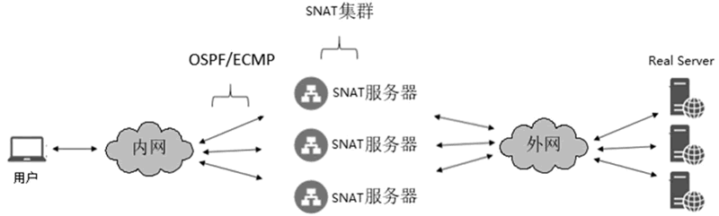
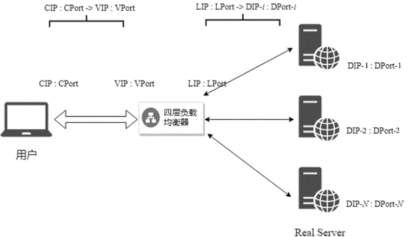
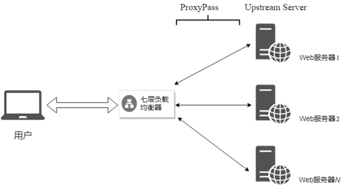
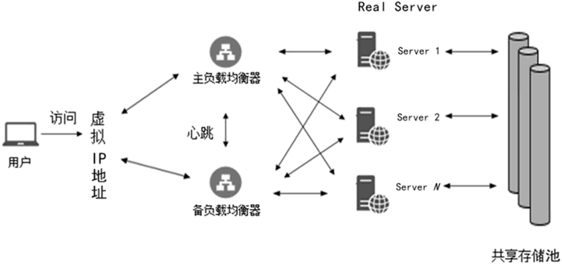
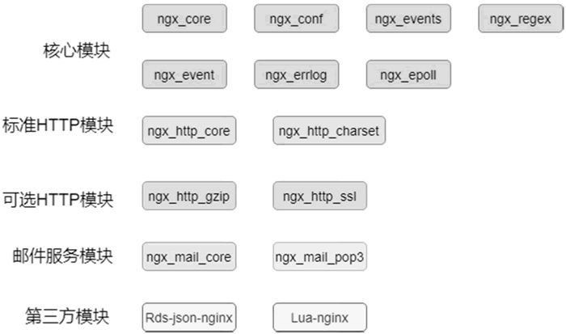
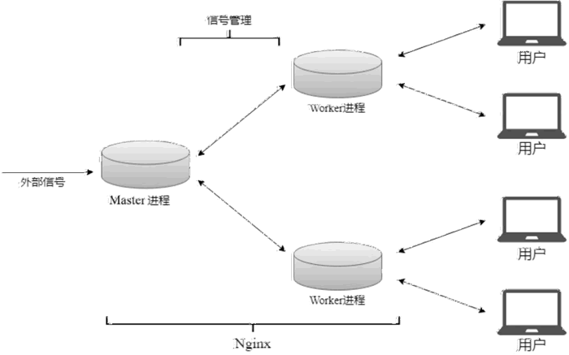

首页 > 编程笔记
负载均衡是什么（超级详细）
随着互联网的迅猛发展，基于网络的数据访问流量迅速增长，特别是对数据中心、大型企业等网站的访问，访问流量甚至达到了 10Gbit/s 的级别。同时，随着服务多样性的增加，如 HTTP、FTP、SMTP 等协议应用为用户提供了丰富的内容和信息，使得服务器被数据淹没。此外，大部分网络服务都要求提供 7×24 小时不间断服务，这就要求服务满足高性能和高可用性的需求。
数据中心是整个行业发展的基础。服务的可扩展性、实时性、高可用性及安全等方面会进一步对数据中心提出挑战，这就使得企业面临数据中心基础设施需要不断升级、扩展甚至重构的压力。
负载均衡技术是为了解决上述需求的一种解决方案，本节将给大家重点介绍负载均衡的产生、负载均衡的原理及其在数据中心的应用（典型的负载均衡器）。
数据中心的概念最早于 20 世纪 60 年代被提出来，通常是指固定的物理环境中的计算机系统、存储系统、电力设备等相关基础组件的总称。
随着通信技术的发展，微型计算机产业市场繁荣，计算机被应用到各行各业，连接型网络设备取代了老一代的 PC。随着 Client-Server 技术模型的出现，人们开始将服务器单独放在一个房间里，并用“数据中心”一词命名该房间，“数据中心”一词从此开始流行起来，这也是传统机房最早期的雏形。
互联网的爆发式增长促使数据中心的建设更加专业化。2005 年，电信部门推出了备受行业认可的机房设计标准，即中国电信IDC产品规范；与此同时，美国电信产业也颁布了“TIA942标准”，将机房分为Tire1~Tire4 四个级别。这项标准为数据中心的发展起到了规范和指导作用。
从 2010 年开始，随着云计算的兴起和云计算技术的不断成熟，数据中心采用超融合技术进行管理，即在通用的服务器硬件基础上，借助虚拟化和分布式技术，将计算、存储、虚拟化融为一体。该技术能够实现资源灵活调配、设备智能管理，以及按需为用户提供服务。
如今，数据中心是存在于多个物理位置的云和非云资源的动态集合，它已经不再受机房的限制，能够实时感知需求、高效处理应用、快速做出响应；为业务提供高可用性、高性能、高安全性的服务。
基于通用处理器，我们可以将网络、计算、存储和安全功能全部虚拟化，同时将全部组件融合在一套虚拟化管理平台中，形成超融合数据中心架构，这使得存储设备、服务器、网络等基础设施减少了对物理硬件的依赖，变得更灵活、更易横向扩展。
超融合数据中心架构如下图所示：
随着用户规模和业务量的不断增长，单一服务器达到了性能瓶颈，对于 PB（1PB=1024TB）级的数据和高并发请求，无论单一或主备数据库、文件系统有多强大，也都不能满足日益增长的需求，此时需要服务器采用集群方式部署，使用负载均衡器进行负载均衡，分担单一服务器的压力。
由于应用服务器从单台设备变成集群设备，客户端的流量不再直接被接入后端服务器，而是需要负载均衡器根据特定的负载均衡算法，将客户流量分发至特定的后端服务器。
为了进一步减少客户端访问延迟，减轻服务器端的压力，采用缓存技术在客户端与负载均衡设备之间加入内容分发网络（Content Delivery Network，CDN），实现对资源的加速，将用户请求精准调整到最优接入节点，从而达到最优的访问性能。
大型互联网架构如下图所示：
简单来说，就是数据中心内部会以集群模式构建各种服务，通过在入口部署负载均衡，对外提供高访问量服务，提高应用程序的可用性、可靠性和可扩展性。这就是负载均衡的产生背景，也是负载均衡技术架构设计的来源。
下图为使用负载均衡服务前后用户访问网络服务的整个过程：
然后，用户向网站服务器端发起HTTP/HTTPS请求。请求会直接进入DNS解析出来的后端应用服务器。后端应用服务器接到请求后，会解析用户HTTP请求，完成业务处理后再将HTTP请求响应返回用户。
其次，用户向网站服务器端发起 HTTP/HTTPS 请求。请求到达数据中心核心层后，由这里部署的负载均衡服务器（Load Balancer，LB）进行处理，该负载均衡服务器通常是 Linux 虚拟服务器（Linux Virtual Server，LVS）。LB 根据不同的算法，将请求分流至后端集群中的服务器。这里有两种不同的路径处理方式：一种是进入代理集群；另一种是进入应用服务集群。这两种路径分别属于前文提到的四层负载均衡器和七层负载均衡器。
然后，进入代理集群。这是为了使用代理的各种高级特性，如反向代理、SSL Offloading、日志收集、缓存、自定义负载均衡等。代理集群通常采用 Nginx 部署，再由代理做负载均衡，将访问流量均衡到后端应用服务集群。
之所以直接进入后端应用服务集群，主要是为了避免代理集群增加额外的操作和路径而导致响应时间变长。所以，针对大流量业务，为了得到更快的响应，会由顶层 LB 直接连接到后端应用服务集群。
后端应用服务器接到请求后，会解析用户 HTTP 请求，完成业务处理后再返回 HTTP 请求响应给用户。
通过上面的实例我们可以看到，使用负载均衡服务前，域名解析到的服务器一旦宕机，就会使得服务不可用。在服务器前端使用负载均衡服务后，可以横向扩展服务。这样，当某台后端应用服务器宕机时，负载均衡设备就会将请求分配给该服务所在后端集群中的其他可用服务器，实现服务的高可用性。
在实现服务高可扩展性方面，可以根据业务发展的需要，通过随时添加和移除负载均衡器后端服务器来扩展应用系统的服务能力，适用于各种 Web 服务器和 App 服务器。
SNAT 集群访问外网的架构如下图所示。
内网交换机与 SNAT 集群之间采用开放式最短路径优先协议（Open Shortest Path First，OSPF）/等价多路径路由协议（Equal-Cost Multipath Routing，ECMP），对内网用户发出的访问流量进行负载均衡。为集群中每个 SNAT 服务器分配独立的外网IP地址，以便转换内网流量的源 IP 地址，达到与外网服务通信的目的。
由此衍生出一种负载均衡的解决方案，即组建服务器群，在集群前端部署负载均衡，将用户请求根据配置的负载均衡策略分发到集群服务器中，以满足高并发业务的需求。
下面简要介绍一下负载均衡的历史、现状及面临的挑战。
同年，F5 公司成立，Foundry 将负载均衡作为创业点，在成立之初便开始关注传输层、应用层（TCP/IP协议OSI参考模型第七层）业务，并在后来长期统治该市场。
F5 是一种综合的交付平台，综合了负载平衡、TCP 优化管理、链接管理、SSL VPN、压缩优化、智能网络地址转换、高级路由、智能端口镜像等各种技术手段。应用交付是一种将关键应用与基础网络设备关联起来的系统解决方案，并逐渐成为负载均衡的发展方向。
复杂的七层负载均衡器（如Nginx、HAProxy、Envoy）也在快速迭代，并逐渐取代负载均衡器供应商（如F5）。因此，七层负载均衡器也在逐步成为商业化软件解决方案。
因此，如今的负载均衡行业处于传统硬件和新兴软件并存的时期。不过，随着行业朝网络解决方案的商业化 OSS（Operation Support Systems，运营支撑系统）硬件和软件方向发展，OSS 软件和云供应商将会取代传统的负载均衡供应商，成为负载均衡的新方向。
如上图所示，在四层负载均衡上，服务以 VIP：VPort 的形式对外暴露；后端集群中有多个节点会响应这个服务。当客户端请求服务访问 VIP：VPort 时，四层负载均衡器收到客户端请求后，会根据负载均衡算法从后端集群中选择一个节点，修改请求的目的 IP：Port 为该节点的 IP：Port（若响应要求经过负载均衡，则需要同时修改源 IP：Port 为负载均衡 local ip/LIP：local port/LPort），把客户端请求分发到该节点。
如下图所示，七层负载均衡器收到客户端请求后，根据配置规则可以实现对HTTP信息的修改、URL路径规则匹配、URL路径重写等，并根据负载均衡调度算法将客户端请求分发到上游服务器（Upstream Server）中。
LVS 是由章文嵩发起的 Linux 开源项目，通过采用集群化技术，为基于Linux的操作系统提供一个构建高性能、高可用应用的解决方案。
LVS 是中国开源软件的先锋和骄傲，在国际上具有较强的影响力，该项目于1998年5月在网站上发布IPVS第一个版本源程序，获得了来自Internet的用户和开发者的支持。
目前，LVS 已经作为 Linux 内核的官方负载均衡解决方案，被广泛认可和采纳。比如，现在在如火如荼进行中的 Kubernetes 项目，LVS 被应用于 Kube-proxy 这一 Kubernetes 核心组件中，用于替代 iptables 优化 Kubernetes Service 的性能；Google 基于 LVS 采用 Go 语言研发了负载均衡平台 Seesaw，作为其内部负载均衡服务的基础架构。LVS 一直被作为核心组件应用于众多系统中。
LVS 实际上是一种集群（Cluster）技术，基于 Linux 内核 IPVS 模块实现负载均衡，基于内容请求进行分发，并通过 IPVS 的管理工具 ipvsadm 进行管理。
LVS 具有很好的吞吐率，可以将请求均衡地分发到不同的服务器上去执行，且自动屏蔽服务器的故障，从而将一组服务器构成一个高性能的、高可用的虚拟服务器。整个服务器群的结构对客户是透明的，而且无须修改客户端和服务器端的程序。
下图所示为 LVS 集群系统结构：
在用户的请求到达负载调度器后，负载调度器如何将请求发送到提供服务的 RS 节点，以及 RS 节点如何将数据返回给用户，是IPVS的实现重点。
目前，LVS 实现了 4 种集群类型，包括 NAT、DR、Tunnel 和 FullNAT，分别有不同的特点和应用场景，这里不再做进一步展开。
Nginx 既可用作静态服务器，提供图片、视频服务，也可用作反向代理或负载均衡服务器。Nginx 作为反向代理，当代理后端应用集群时，需要进行负载均衡。
Nginx 提供了对上游服务器（真实业务逻辑访问的服务器）的负载均衡、故障转移、失败重试、容错、健康检查等功能，以一种廉价有效透明的方法扩展了网络设备和服务器的带宽、增加吞吐量、加强网络数据处理能力、提高网络的灵活性和可用性。
Nginx 具有高并发连接、低内存消耗、低成本、配置简单灵活、支持热部署、稳定性高、可扩展性好等优点，这些优点都得益于其优秀的架构设计（模块化、多进程和多路I/O复用模型）。
多进程：一个 Master 进程和多个 Worker 进程。Nginx 在启动后会有一个 Master 进程负责接收外部信号、管理 Worker 进程。Master 进程在接收到外部信号后会将该信号传递到 Worker 进程，最终由 Worker 进程来处理实际的请求连接任务，和用户交互。其中，Worker 进程通常与 CPU 内核数量一致，可以更好地利用多核特性、通过无限循环不断接收来自客户端的请求，处理真正的业务逻辑。
I/O 多路复用模型：如果不使用 I/O 多路复用，那么在一个进程中，某个时间段只能处理一个请求。而多路复用模型（如 Nginx 采用的 Epoll 模型）允许在某一时间段同时处理多个请求。通过事件注册机制，Epoll 对象会在已注册事件发生时通知某个进程来处理，事件处理完之后进程就会空闲下来等待其他事件。
在 Nginx 中，当某个 Worker 进程接收到客户端的请求后，会调用 I/O 进行处理。如果不能立即得到结果，就会去处理其他请求（即非阻塞），而客户端在此期间也无须等待响应，可以去处理其他事情（即异步）。当有 I/O 结果返回时，Epoll 对象就可以监听 I/O 对应的文件描述符的变化，并通知对应的 Worker 进程。该进程得到通知后，会暂时挂起当前处理的事务，响应客户端请求。
从上面的过程中可以看出，虽然每个进程只有一个线程，同一时间只能做一件事情，但是可以通过不断切换来“同时”处理多个请求。
通过使用上述的多进程机制和 I/O 多路复用模型，Nginx 就具备了高并发的特性。
数据中心是整个行业发展的基础。服务的可扩展性、实时性、高可用性及安全等方面会进一步对数据中心提出挑战，这就使得企业面临数据中心基础设施需要不断升级、扩展甚至重构的压力。
负载均衡技术是为了解决上述需求的一种解决方案，本节将给大家重点介绍负载均衡的产生、负载均衡的原理及其在数据中心的应用（典型的负载均衡器）。
从数据中心说起
首先，一起了解一下数据中心的发展历史，以及超融合数据中心架构和大型互联网架构。数据中心的发展历史
数据中心的发展主要经历了以下 4 个关键阶段。1) 初期阶段
20 世纪 60 年代是以数据存储和计算为主的初期阶段。数据中心的概念最早于 20 世纪 60 年代被提出来，通常是指固定的物理环境中的计算机系统、存储系统、电力设备等相关基础组件的总称。
2) 快速发展阶段
20 世纪八九十年代是以数据处理和业务应用为主的快速发展阶段。随着通信技术的发展，微型计算机产业市场繁荣，计算机被应用到各行各业，连接型网络设备取代了老一代的 PC。随着 Client-Server 技术模型的出现，人们开始将服务器单独放在一个房间里，并用“数据中心”一词命名该房间，“数据中心”一词从此开始流行起来，这也是传统机房最早期的雏形。
3) 稳定发展阶段
21 世纪初是数据和业务体量不断增长的稳定发展阶段。互联网的爆发式增长促使数据中心的建设更加专业化。2005 年，电信部门推出了备受行业认可的机房设计标准，即中国电信IDC产品规范；与此同时，美国电信产业也颁布了“TIA942标准”，将机房分为Tire1~Tire4 四个级别。这项标准为数据中心的发展起到了规范和指导作用。
4) 超融合架构阶段
自 2010 年以来，数据中心进入以服务为主的超融合架构阶段。从 2010 年开始，随着云计算的兴起和云计算技术的不断成熟，数据中心采用超融合技术进行管理，即在通用的服务器硬件基础上，借助虚拟化和分布式技术，将计算、存储、虚拟化融为一体。该技术能够实现资源灵活调配、设备智能管理，以及按需为用户提供服务。
如今，数据中心是存在于多个物理位置的云和非云资源的动态集合，它已经不再受机房的限制，能够实时感知需求、高效处理应用、快速做出响应；为业务提供高可用性、高性能、高安全性的服务。
超融合数据中心架构和大型互联网架构
那么现今的数据中心服务（提供数据的服务中心）是如何提供高可用性、高性能、高安全性的服务的呢？这就涉及架构设计。超融合数据中心架构
随着云计算和虚拟化、分布式技术的发展，数据中心进入虚拟化、超融合阶段。基于通用处理器，我们可以将网络、计算、存储和安全功能全部虚拟化，同时将全部组件融合在一套虚拟化管理平台中，形成超融合数据中心架构，这使得存储设备、服务器、网络等基础设施减少了对物理硬件的依赖，变得更灵活、更易横向扩展。
超融合数据中心架构如下图所示：

图: 超融合数据中心架构
图: 超融合数据中心架构
- 核心层：核心交换机是网络的枢纽中心，该模块为进出数据中心的数据包提供了高速转发的服务，并在后端服务以集群部署时为其提供负载均衡服务。
- 接入层：接入交换机通常位于机架顶部，连接服务器，实现资源灵活迁移。
- 服务虚拟化：以单台或集群方式对外提供服务资源，每台服务器运行多个服务（以虚拟机为载体）。
大型互联网架构
初始的互联网架构较为简单，应用程序、数据库、文件都部署在同一台服务器上，可以满足少量的业务需求。随着用户规模和业务量的不断增长，单一服务器达到了性能瓶颈，对于 PB（1PB=1024TB）级的数据和高并发请求，无论单一或主备数据库、文件系统有多强大，也都不能满足日益增长的需求，此时需要服务器采用集群方式部署，使用负载均衡器进行负载均衡，分担单一服务器的压力。
由于应用服务器从单台设备变成集群设备，客户端的流量不再直接被接入后端服务器，而是需要负载均衡器根据特定的负载均衡算法，将客户流量分发至特定的后端服务器。
为了进一步减少客户端访问延迟，减轻服务器端的压力，采用缓存技术在客户端与负载均衡设备之间加入内容分发网络（Content Delivery Network，CDN），实现对资源的加速，将用户请求精准调整到最优接入节点，从而达到最优的访问性能。
大型互联网架构如下图所示：

图: 大型互联网架构
图: 大型互联网架构
负载均衡必要性分析
从单机的角度提升服务器处理能力，无论是提升 CPU 处理能力，还是增加内存、磁盘等空间，都不能满足日益增长的大流量、高并发、海量数据在高性能、高可用性等方面的需求。因此，只能通过横向扩展，增加服务器，即采用集群和负载均衡架构，来共同分担访问压力、提升业务处理能力。简单来说，就是数据中心内部会以集群模式构建各种服务，通过在入口部署负载均衡，对外提供高访问量服务，提高应用程序的可用性、可靠性和可扩展性。这就是负载均衡的产生背景，也是负载均衡技术架构设计的来源。
负载均衡的作用
本节会对负载均衡的一些应用场景进行简单探讨，在此之前，我们先通过用户访问网络服务的实例来大致了解一下负载均衡在用户访问服务过程中起到的作用。下图为使用负载均衡服务前后用户访问网络服务的整个过程：

图: 用户访问网络服务的整个过程
图: 用户访问网络服务的整个过程
1) 使用负载均衡服务前
首先，用户根据域名发起连接请求，通过 DNS 域名解析获取域名对应的后端应用服务器的IP地址。然后，用户向网站服务器端发起HTTP/HTTPS请求。请求会直接进入DNS解析出来的后端应用服务器。后端应用服务器接到请求后，会解析用户HTTP请求，完成业务处理后再将HTTP请求响应返回用户。
2) 使用负载均衡服务后
首先，用户根据域名发起连接请求，通过 DNS 域名解析获取域名对应的后端应用服务器的 IP 地址。若部署了 CDN，则此过程会由全局负载均衡的 DNS 进行域名解析，并通过 CDN 将 IP 地址返回缓存服务器。其次，用户向网站服务器端发起 HTTP/HTTPS 请求。请求到达数据中心核心层后，由这里部署的负载均衡服务器（Load Balancer，LB）进行处理，该负载均衡服务器通常是 Linux 虚拟服务器（Linux Virtual Server，LVS）。LB 根据不同的算法，将请求分流至后端集群中的服务器。这里有两种不同的路径处理方式：一种是进入代理集群；另一种是进入应用服务集群。这两种路径分别属于前文提到的四层负载均衡器和七层负载均衡器。
然后，进入代理集群。这是为了使用代理的各种高级特性，如反向代理、SSL Offloading、日志收集、缓存、自定义负载均衡等。代理集群通常采用 Nginx 部署，再由代理做负载均衡，将访问流量均衡到后端应用服务集群。
之所以直接进入后端应用服务集群，主要是为了避免代理集群增加额外的操作和路径而导致响应时间变长。所以，针对大流量业务，为了得到更快的响应，会由顶层 LB 直接连接到后端应用服务集群。
后端应用服务器接到请求后，会解析用户 HTTP 请求，完成业务处理后再返回 HTTP 请求响应给用户。
通过上面的实例我们可以看到，使用负载均衡服务前，域名解析到的服务器一旦宕机，就会使得服务不可用。在服务器前端使用负载均衡服务后，可以横向扩展服务。这样，当某台后端应用服务器宕机时，负载均衡设备就会将请求分配给该服务所在后端集群中的其他可用服务器，实现服务的高可用性。
场景需求
接下来介绍一下负载均衡的 4 种主要场景需求。1) 流量负载均衡
流量负载均衡如下图所示。在高访问量场景下，可以通过负载均衡配置监听规则、负载均衡策略，将访问流量分发到不同的后端服务器上，增加系统的吞吐量和网络处理能力；同时，可以启用会话保持功能，将同一个客户端的请求转发到同一个后端服务器上，以提高访问效率。

图: 流量负载均衡
图: 流量负载均衡
2) 实现服务的高可用性、高可扩展性
在实现服务的高可用性方面，当后端的某台服务器发生故障后，负载均衡健康检查会及时感知到，并自动屏蔽该服务器，将其从负载均衡策略中移除，后续的请求会被分发到正常运行的后端服务器中，从而保证业务的正常运行，消除单点故障，实现服务的高可用性。在实现服务高可扩展性方面，可以根据业务发展的需要，通过随时添加和移除负载均衡器后端服务器来扩展应用系统的服务能力，适用于各种 Web 服务器和 App 服务器。
3) 提供外网访问
为了满足内网用户访问外网服务的需求，负载均衡采用 SNAT 集群提供外网访问。SNAT 集群访问外网的架构如下图所示。

图: SNAT集群访问外网的架构
图: SNAT集群访问外网的架构
内网交换机与 SNAT 集群之间采用开放式最短路径优先协议（Open Shortest Path First，OSPF）/等价多路径路由协议（Equal-Cost Multipath Routing，ECMP），对内网用户发出的访问流量进行负载均衡。为集群中每个 SNAT 服务器分配独立的外网IP地址，以便转换内网流量的源 IP 地址，达到与外网服务通信的目的。
4) 安全与防火墙功能
负载均衡作为数据中心的入口，适合在该层做安全防护策略，如负载均衡自带的 SYNPROXY 防攻击机制、黑白名单、安全或防火墙等。通过这些策略，我们可以在一定程度上避免攻击报文流入数据中心内部，保护数据，使之更安全稳定。负载均衡的产生
随着网络技术的快速发展，服务器的处理能力和内存访问速度的增长远远低于网络带宽和应用服务的增长速度；同时，用户数量的增长也导致服务器资源消耗严重，服务器成为网络的瓶颈，而单机模式也往往成为网络的故障点。由此衍生出一种负载均衡的解决方案，即组建服务器群，在集群前端部署负载均衡，将用户请求根据配置的负载均衡策略分发到集群服务器中，以满足高并发业务的需求。
下面简要介绍一下负载均衡的历史、现状及面临的挑战。
负载均衡的历史
负载均衡是随着网络的快速发展而兴起的，回顾其发展历史可以分为以下 4 个阶段。1) 诞生
负载均衡的概念最早于 1996 年由 Foundry 提出，着眼于在传输层（TCP/IP 协议 OSI 参考模型第四层）将负载均衡集成在自己的设备中。同年，F5 公司成立，Foundry 将负载均衡作为创业点，在成立之初便开始关注传输层、应用层（TCP/IP协议OSI参考模型第七层）业务，并在后来长期统治该市场。
2) 生存中求发展
2000年~2003 年，很多互联网公司认识到负载均衡的重要性，纷纷以收购的方式进入该市场，如思科在 2000 年 5 月收购 Arrowpoint，北电网络在 2000 年 10 月收购 Alteon。也正是在这个时期，互联网泡沫爆发，许多负载均衡公司面临着生存的考验。3) 快速发展
熬过了互联网寒冬，整个行业从 2003 年开始迎来了复苏，由互联网引导的客户经济在这个时期开始产生真正的经济效益并逐步发展。随之而来的则是各种网络应用流量瓶颈的问题，单纯依靠升级传统设备已经无法解决流量瓶颈的问题。负载均衡便在此时大显身手，很多负载均衡设备厂商，如 F5、Netscaler 等都得到了快速发展。4) 应用交付
从 2006 年开始，国内互联网市场火爆了起来，电子商务、视频网站、流媒体等形成了巨大的访问量。普通的负载均衡已经无法满足网络应用流量增长的需求。F5 便对传统负载均衡进行升级、扩展，倡导基于网络七层的应用交付的概念。F5 是一种综合的交付平台，综合了负载平衡、TCP 优化管理、链接管理、SSL VPN、压缩优化、智能网络地址转换、高级路由、智能端口镜像等各种技术手段。应用交付是一种将关键应用与基础网络设备关联起来的系统解决方案，并逐渐成为负载均衡的发展方向。
负载均衡的现状
负载均衡设备和路由器一样，一直都是非常昂贵的专用硬件。大部分三、四层专用网络设备被商业化服务硬件、商业化网络接口控制器（Network Interface Controller，NIC）和基于数据平面开发套件（Data Plane Development Kit，DPDK）、快速数据开源项目（Fd.io，Fast Data-Input/Output）等专业软件方案所取代。使用 Linux 和基于 DPDK 编写的自定义的用户空间应用程序进行快速收发包，这样服务器可以用非常小的数据包轻易使 80Gbit/s 的网卡饱和。复杂的七层负载均衡器（如Nginx、HAProxy、Envoy）也在快速迭代，并逐渐取代负载均衡器供应商（如F5）。因此，七层负载均衡器也在逐步成为商业化软件解决方案。
因此，如今的负载均衡行业处于传统硬件和新兴软件并存的时期。不过，随着行业朝网络解决方案的商业化 OSS（Operation Support Systems，运营支撑系统）硬件和软件方向发展，OSS 软件和云供应商将会取代传统的负载均衡供应商，成为负载均衡的新方向。
负载均衡面临的挑战
现如今，负载均衡已成为高并发网络架构中必不可少的组件，大型互联网架构也越来越多地依赖负载均衡。与此同时，我们也看到了负载均衡发展过程中所面临的一些新的挑战。1) 性能
基于通用处理器部署的用户态负载均衡软件，受限于操作系统对多核并发的支持度，而不仅是受限于CPU的数量，因此负载均衡面临新的性能瓶颈。比如，HAProxy 这类基于用户态的软件负载均衡，其对 CPU 主频的依赖度要远远高于 CPU 核数，这使得对服务器类型选择的要求较为严格。2) 业务
越来越多的 Web 流量需要流经七层负载均衡器，使得七层负载均衡器需要支持的协议、需要解析的应用数据越来越多；尤其是在出现高并发连接的突发情况下，负载均衡将承担巨大的业务压力。同时，七层负载均衡的交换规则越来越复杂，使得架构师和程序员对其增加了依赖，无形中也加重了七层负载均衡的负担。3) 成本
软件负载均衡之所以被广泛使用，很大程度上是由于其成本较低（包括后期的管理和维护成本）但是，每增加一组负载均衡，投入的成本就会增加，随着对负载均衡的依赖越来越大，成本问题日渐突出。如何提升单机的运营能力成为负载均衡面临的一项新挑战。4) 运维
负载均衡处于客户端和后端服务器之间，当业务出现故障时，尤其是有的故障与客户端、后端服务器的配置相关联时，很难通过负载均衡提供的连接统计、CPU、内存、有限的日志等统计信息发现隐蔽的问题。这给运维人员进行故障诊断带来了很大的困难，在这方面我们需要探索出更为先进的方法。负载均衡的原理
这里重点给大家阐述两大类（按工作方式划分）负载均衡技术原理：四层负载均衡原理、七层负载均衡原理。四层负载均衡的原理
四层负载均衡工作在网络七层开放式系统互联（Open System Interconnect，OSI）模型的第四层，即传输层，基于 IP 和端口进行请求分发。典型的四层负载均衡是 LVS。

图: 四层负载均衡
图: 四层负载均衡
如上图所示，在四层负载均衡上，服务以 VIP：VPort 的形式对外暴露；后端集群中有多个节点会响应这个服务。当客户端请求服务访问 VIP：VPort 时，四层负载均衡器收到客户端请求后，会根据负载均衡算法从后端集群中选择一个节点，修改请求的目的 IP：Port 为该节点的 IP：Port（若响应要求经过负载均衡，则需要同时修改源 IP：Port 为负载均衡 local ip/LIP：local port/LPort），把客户端请求分发到该节点。
七层负载均衡的原理
七层负载均衡工作在网络七层 OSI 模型的第七层，即应用层。其基于请求的应用层信息做负载均衡，如七层协议信息（HTTP、RADIUS、DNS等）、七层 URL 信息、浏览器类别信息等，在功能上更加丰富，可以使整个网络更加智能化。典型的七层负载均衡器是 Nginx。如下图所示，七层负载均衡器收到客户端请求后，根据配置规则可以实现对HTTP信息的修改、URL路径规则匹配、URL路径重写等，并根据负载均衡调度算法将客户端请求分发到上游服务器（Upstream Server）中。

图: 七层负载均衡
图: 七层负载均衡
典型的负载均衡器介绍
1、LVS
提到负载均衡器就不得不介绍一下中国开源界的丰碑——Linux 虚拟服务器（LVS）。LVS 是由章文嵩发起的 Linux 开源项目，通过采用集群化技术，为基于Linux的操作系统提供一个构建高性能、高可用应用的解决方案。
LVS 是中国开源软件的先锋和骄傲，在国际上具有较强的影响力，该项目于1998年5月在网站上发布IPVS第一个版本源程序，获得了来自Internet的用户和开发者的支持。
目前，LVS 已经作为 Linux 内核的官方负载均衡解决方案，被广泛认可和采纳。比如，现在在如火如荼进行中的 Kubernetes 项目，LVS 被应用于 Kube-proxy 这一 Kubernetes 核心组件中，用于替代 iptables 优化 Kubernetes Service 的性能；Google 基于 LVS 采用 Go 语言研发了负载均衡平台 Seesaw，作为其内部负载均衡服务的基础架构。LVS 一直被作为核心组件应用于众多系统中。
LVS 实际上是一种集群（Cluster）技术，基于 Linux 内核 IPVS 模块实现负载均衡，基于内容请求进行分发，并通过 IPVS 的管理工具 ipvsadm 进行管理。
LVS 具有很好的吞吐率，可以将请求均衡地分发到不同的服务器上去执行，且自动屏蔽服务器的故障，从而将一组服务器构成一个高性能的、高可用的虚拟服务器。整个服务器群的结构对客户是透明的，而且无须修改客户端和服务器端的程序。
集群结构
LVS 由前端的负载均衡器（Load Balancer，LB）和后端的服务器（Real Server，RS）群组成，整个系统主要分为以下三大部分。- 负载均衡器：LVS系统的前端维护一个虚拟IP地址。当客户端访问这个虚拟IP地址时，负载均衡器会负责将客户端的请求通过特定的算法分发到不同的真实服务器上执行。为了避免单点故障，通常需要两个负载均衡器做主从备份（LVS本身并不支持该功能）。
- 服务器群：一组真正执行客户端请求的服务器，负责处理客户端请求并返回结果。RS之间可以通过局域网或广域网连接，并对客户透明。
- 共享存储池：为服务器群提供一个共享的存储区，确保服务器群都能得到一致的数据、提供相同的服务。一般使用网络文件系统或分布式文件系统。
下图所示为 LVS 集群系统结构：

图: LVS集群系统结构
图: LVS集群系统结构
工作模式
IPVS 是 LVS 集群系统的核心软件，它安装在负载调度器上，同时会在负载调度器上虚拟出一个 IP 地址，用户必须通过这个虚拟的IP地址访问服务器。这个虚拟的 IP 地址一般被称为 LVS 的 VIP（Virtual IP）。访问的请求首先经过 VIP 到达负载调度器，然后由负载调度器从 RS 列表中选取一个服务节点响应用户的请求。在用户的请求到达负载调度器后，负载调度器如何将请求发送到提供服务的 RS 节点，以及 RS 节点如何将数据返回给用户，是IPVS的实现重点。
目前，LVS 实现了 4 种集群类型，包括 NAT、DR、Tunnel 和 FullNAT，分别有不同的特点和应用场景，这里不再做进一步展开。
2、Nginx
Nginx（engine x）是基于 C 语言实现的一个高性能、轻量级的 HTTP 和反向代理 Web 服务器，同时也提供了 IMAP/POP3/SMTP 服务。Nginx 既可用作静态服务器，提供图片、视频服务，也可用作反向代理或负载均衡服务器。Nginx 作为反向代理，当代理后端应用集群时，需要进行负载均衡。
Nginx 提供了对上游服务器（真实业务逻辑访问的服务器）的负载均衡、故障转移、失败重试、容错、健康检查等功能，以一种廉价有效透明的方法扩展了网络设备和服务器的带宽、增加吞吐量、加强网络数据处理能力、提高网络的灵活性和可用性。
Nginx 具有高并发连接、低内存消耗、低成本、配置简单灵活、支持热部署、稳定性高、可扩展性好等优点，这些优点都得益于其优秀的架构设计（模块化、多进程和多路I/O复用模型）。
模块介绍
Nginx 服务器由多个模块组成，每个模块负责自身的功能，模块之间“高内聚、低耦合”，如下图所示。

图: Nginx服务器的模块
图: Nginx服务器的模块
- 核心模块：是Nginx服务器正常运行必不可少的模块，提供错误日志记录、配置文件解析、事件驱动机制、进程管理等核心功能。
- 标准HTTP模块：提供HTTP协议解析相关的功能，如端口配置、网页编码设置、HTTP响应头设置等。
- 可选HTTP模块：主要用于扩展标准的HTTP功能，让Nginx能处理一些特殊的服务，如Flash多媒体传输、解析GeoIP请求、SSL支持等。
- 邮件服务模块：主要用于支持Nginx的邮件服务，包括对POP3协议、IMAP协议和SMTP协议的支持。
- 第三方模块：为了扩展Nginx服务器应用，完成开发者自定义功能，如JSON支持、Lua支持等。
架构设计
Nginx 服务器是采用 Master/Worker 多进程模式实现的，如下图所示。

图: Master/Worker多进程模式
图: Master/Worker多进程模式
多进程：一个 Master 进程和多个 Worker 进程。Nginx 在启动后会有一个 Master 进程负责接收外部信号、管理 Worker 进程。Master 进程在接收到外部信号后会将该信号传递到 Worker 进程，最终由 Worker 进程来处理实际的请求连接任务，和用户交互。其中，Worker 进程通常与 CPU 内核数量一致，可以更好地利用多核特性、通过无限循环不断接收来自客户端的请求，处理真正的业务逻辑。
I/O 多路复用模型：如果不使用 I/O 多路复用，那么在一个进程中，某个时间段只能处理一个请求。而多路复用模型（如 Nginx 采用的 Epoll 模型）允许在某一时间段同时处理多个请求。通过事件注册机制，Epoll 对象会在已注册事件发生时通知某个进程来处理，事件处理完之后进程就会空闲下来等待其他事件。
在 Nginx 中，当某个 Worker 进程接收到客户端的请求后，会调用 I/O 进行处理。如果不能立即得到结果，就会去处理其他请求（即非阻塞），而客户端在此期间也无须等待响应，可以去处理其他事情（即异步）。当有 I/O 结果返回时，Epoll 对象就可以监听 I/O 对应的文件描述符的变化，并通知对应的 Worker 进程。该进程得到通知后，会暂时挂起当前处理的事务，响应客户端请求。
从上面的过程中可以看出，虽然每个进程只有一个线程，同一时间只能做一件事情，但是可以通过不断切换来“同时”处理多个请求。
通过使用上述的多进程机制和 I/O 多路复用模型，Nginx 就具备了高并发的特性。
关注公众号「站长严长生」，在手机上阅读所有教程，随时随地都能学习。内含一款搜索神器，免费下载全网书籍和视频。

微信扫码关注公众号